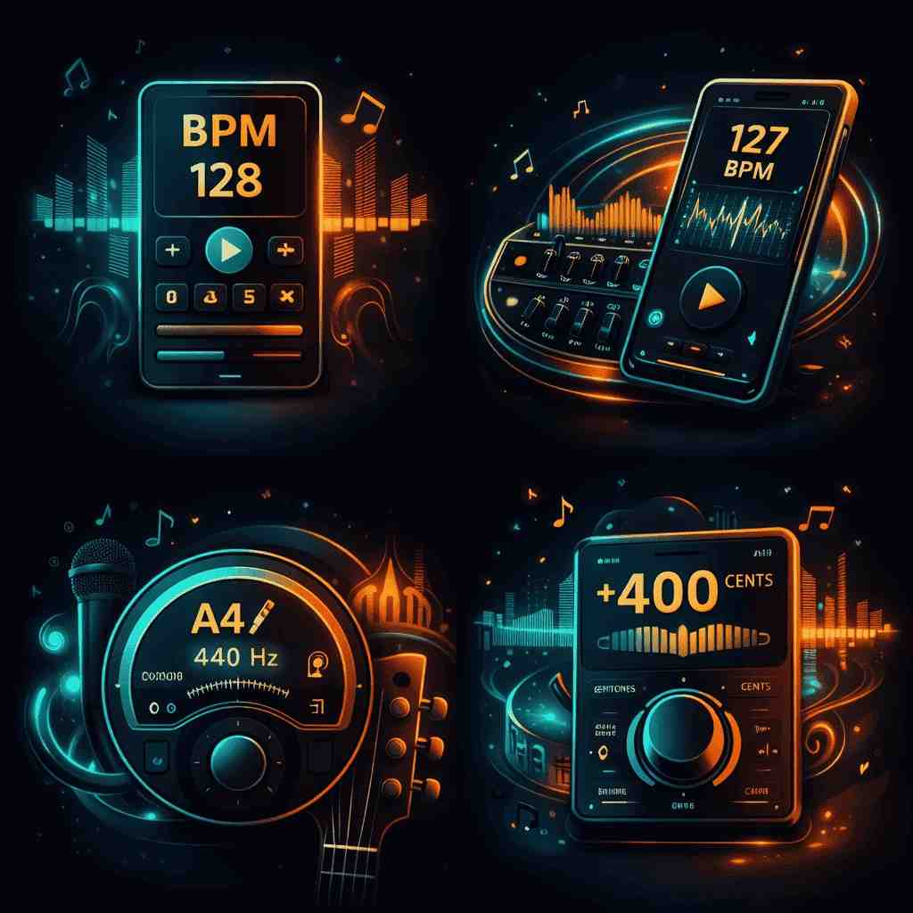

Instantly calculate BPM, detect song key, analyze pitch, tune instruments, and match tempo using professional DJ & music production tools directly in your browser.
Analyze tempo, pitch, and frequency instantly using advanced browser-based audio processing.
Professional music production tools with no subscriptions, limits, or hidden costs.
Use our BPM and pitch tools on desktop, tablet, or smartphone — anytime, anywhere.
All audio stays in your browser. We never upload, store, or track your sound.
